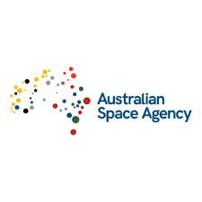

Australian Space Agency (ASA)
The Australian Space Agency is the national space agency of Australia. It was officially established on 1 July 2018 and is headquartered in Adelaide, South Australia. The agency was created to grow and coordinate Australia’s civil space sector.
Overview
The Australian Space Agency is responsible for developing national space policy, supporting the growth of Australia’s space industry, and strengthening international partnerships. It works closely with government, industry, and research organizations to advance space capabilities.
Key Responsibilities
- Developing and implementing Australia’s national space strategy
- Supporting commercial space industry growth
- Regulating civil space activities in Australia
- Promoting international cooperation with agencies such as NASA and ESA
Current Focus Areas
The agency focuses on areas such as satellite technology, space situational awareness, Earth observation, robotics, and launch services. A key objective is to expand Australia’s space economy and create high-skill jobs.
International Cooperation
The Australian Space Agency collaborates with international partners on scientific missions, space exploration initiatives, and technology development. These partnerships help Australia contribute to global space exploration while benefiting from shared expertise.